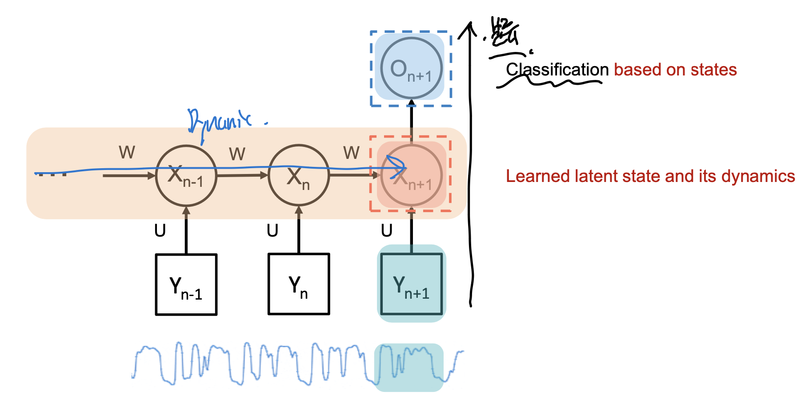

Recurrent Neural Network(RNN) & LSTM
지금까지 많은
Neueral Network
구조 들에 대해서
배워왔다.
모든 network들은 살펴보면,
각각의 특정 목적에 맞게 설계되었다.
이번에는
time - series data
를 가지고
다음 time을 예측하는 문제를 풀어보자.
(Recurrent Neural Network)
결론적으로, RNN구조는 다음과 같다.

오른쪽으로 갈수록 시간이 흐르고,
Y가 시간에 따른 input 데이터 라고 하자
이때, 특정 layer을 지나, X - latent state value
를 각각 시간마다 구할 수 있다.
그리고, 우리가 하고 싶은 것은
시간에 따른 흐름
이다.
결국, 시간의 흐름에 따라 Latent value가 어떻게 바뀌는 지
'Dynamic'
을 가지고,
최종 output 을 도출한다
여기서 조금 더 복잡하게 RNN구조를 그려보면,

gray: input, green: latent, Orange: Output
핵심은 latent values들이 전부 연결되어 있다는 것이다.
따라서, 시간 t = n 일때 이전 t =0 -> (n-1)의 모든
latent 정보들은 t = n , latent에 Input으로 들어간다.
여기서 시간이 t일때,
ht는 ht-1과 xt의 조합으로
이루어질 것이다.

이를 함수로 나타내면 다음과 같다.

[Long-short term memory(LSTM)]
여기서 재밌는 것은,
이전 시간의 모든 정보들을 다 담는 것은 굉장히 비효율적이다.
gradient를 계산할때 굉장히 오래거리고,
gradient vanishing 문제도 발생한다.
따라서,
과거정보들중
필요한 정보
들만 선택적으로 저장할수는 없을까?
예를들어, 시간 t+1일때, output h_t+1을 구하고 싶은데,
이때 중요한 과거 데이터는 x_0, x_1밖에 없다.
즉, 나머지 x_2 ... x_t는 무시할 수 없을까???

RNN example
해결책은 연산 과정속에서,
이렇게 gate를 설치하는 것이다.
원하는 흐름으로 계산하도록 유도.

이 게이트 열고 닫음을
구동시키는 매커니즘이 바로
LSTM이다.
LSTM에서 Gate는 다음과 같은 연산방식으로,
흘러 나가는 정보의 양을 조절한다.

구체적으로,
LSTM이 정확히 어떤 구조의 flow로
선택적으로 정보를 저장하는 살펴보자.
기본적인 RNN time: t일때,
연산과정에서부터 시작해보자.
밑의 사진처럼,
2개의 정보
이전시간의 latent 정보[ h_(t-1) ] ,
현재 input data [x_t] 를 가지고,
현재 시간의 output [h_t]를 predict하는 구조이다.

여기서
Forgetting gate
를 추가해보자.
바로, x_t, h_t-1중에서
선택적으로 어느 정보를 지울지를 학습한다.

여기에 더하여, 최종적으로 prediction으로 선택적으로 보내기 위한
selection gate
도 설치한다.

forgeting 이전에 아예 정보를 무시하기 위한
ignoring gate
도 설치해준다.

위 diagram을 LSTM CELL로 표시한 사진은 다음과 같다.

정리하자면, 총 3가지 gate가 존재한다.
ht-1, xt 정보를 가지고
1. 이전 Cell 정보에서 어디까지 잊을지 정하고
(forgetting gate)
2. ht-1, xt 정보를 cell 정보에 어디까지 더할지 정하고
(Ignoring gate)
3. 최종 output(h_t)를 어디까지 정할지.
(Selection gate)
지금까지는 LSTM 특정 시간(t)에 대한
1개 cell의 구조에 대해서
알아 보았고,
실제로는 이제 여러시간에 따른 series구조이기 때문에
다음과 같이, LSTM cell여러개가 in sequence한 형태이다.

LSTM, RNN의 문제점
일단, 계산량이 너무 많다.
선택적으로 정보를 저장하더라도, 저장해야할
정보의 양도 너무 많다.